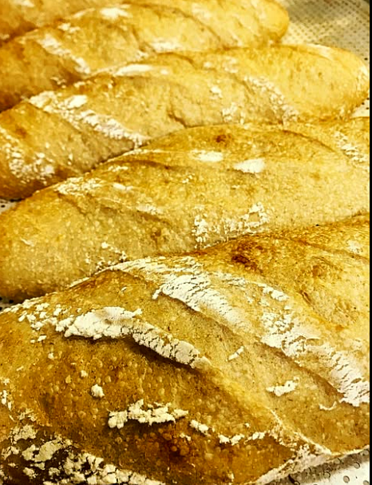

Boutique de
Pães Vivos.
O pão verdadeiro não aceita pressa. Grãos biodinâmicos puros, fermentação natural de 36 horas e o respeito absoluto ao solo e ao tempo das coisas bem feitas.

Alimento vivo que regenera a terra e nutre o corpo.
Agricultura Biodinâmica
Grãos produzidos sob os princípios da Antroposofia de Rudolf Steiner. Solos vivos, sem agrotóxicos ou adubos sintéticos, respeitando os ritmos naturais do sol e da lua.
Fermentação Natural Lenta (36h)
Apenas quatro elementos: farinha biodinâmica pura, água mineral, sal marinho e colônias selvagens de leveduras cuidadas diariamente. O glúten é pré-digerido, resultando em leveza e nutrição profunda.
Certificação Participativa (SPG/OPAC)
A garantia orgânica da Engelke nasce do acompanhamento direto entre agricultores, produtores e consumidores da ABDSul no Litoral Catarinense.
Cortes Rítmicos,
Farinha Viva.
“A assinatura do mestre padeiro não se faz com tinta, mas com o golpe preciso da lâmina a 42 graus antes do forno.”
Sobre o calor da fornalha, a farinha biodinâmica pura desenha vales brancos enquanto a casca estaladiça carameliza e canta. O miolo se expande em alvéolos abertos e aerados — prova inquestionável de 36 horas de fermentação natural selvagem, sem pressa e sem químicos.

A Lendária Sachertorte.
“Criada em 1832 por Franz Sacher em Viena sob encomenda do príncipe Metternich. Chocolate nobre, entremeado por compota artesanal de damascos e finalizado com ganache espelhada de cacau puro.”

Cronograma de Fornadas
Como os pães têm fermentação de 36 horas, as fornadas são pontuais e limitadas. Garanta o seu antes que esgote reservando no WhatsApp.
| Dia da Semana | Horários | Fornada do Dia | Reserva Rápida |
|---|---|---|---|
| Quarta-feira | 07h30 • 15h30 | 🔥 Saindo Agora Sourdough Tradicional Demeter & Ciabatta de Azeite Extra Virgem | Reservar ↗ |
| Quinta-feira | 07h30 • 15h30 | ✅ Disponível Pão 100% Centeio Alemão Roggenbrot & Multigrãos Germinados | Reservar ↗ |
| Sexta-feira | 07h30 • 15h30 | ✅ Disponível Pão de Nozes com Figos Turcos, Baguetes Francesas & Brioches | Reservar ↗ |
| Sábado & Domingo | 08h00 Especial | ⚠️ Poucos Sachertorte Imperial em fatias, Cestas de Café da Manhã & Cinnamon Rolls | Reservar ↗ |
Reservas da Fornada & Encomendas
Escolha o item desejado para abrir o diálogo direto no WhatsApp de Engelke e Gustavo com seu pedido pronto.
Falar com Engelke & Gustavo no WhatsApp